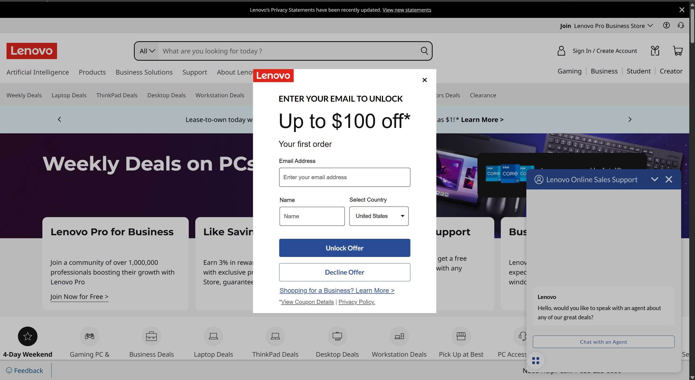

UX/UI Case Study
Lenovo Website Redesign
A case study documenting my individual contributions to improving usability, navigation, accessibility, and user flow in a Lenovo retail website redesign.
Define the Problem
The original Lenovo retail website presented significant usability barriers for everyday shoppers. Upon landing on the homepage, users were immediately interrupted by multiple overlapping pop-ups — including an email capture form and a live chat widget — before they could view any products. This forced users to dismiss distractions before completing any meaningful action.
The header contained over 15 navigation links across two rows, many of which were redundant or led to the same destinations. During a heuristic evaluation, I identified that this violated Nielsen's "aesthetic and minimalist design" principle — every extra link competes with the ones that actually matter. Users attempting to browse or purchase laptops reported feeling lost before reaching a single product page. My goal was to reduce cognitive load by eliminating unnecessary pop-ups, consolidating navigation, and creating a clearer path from the homepage to product discovery and checkout.

Walk Through My Process
Sketching & Early Wireframes
I began with low-fidelity paper sketches to rapidly explore layout options without getting attached to visual details. My first priority was restructuring the header — I reduced the navigation to five core categories and moved secondary links into a collapsible menu. I also removed all pop-ups from the homepage entirely, replacing the email capture with a subtle banner that could be dismissed without blocking content.
The second sketch focused on the form feedback page, where I introduced a modal overlay instead of a separate page redirect. This decision was driven by the insight that forcing users to leave the current page to submit feedback caused them to lose their browsing context — a friction point identified in the original site critique.


Figma Wireframes
I translated my sketches into digital wireframes in Figma to test layout proportions and spacing more precisely. Based on peer critique of the sketches, I made two key changes: I added a persistent search bar fixed to the top of the page (rather than hidden behind a click), and I introduced category filter icons below the header to help users narrow products without entering the search flow at all.
The search page wireframe introduced a left-side filter panel — a pattern users already recognize from sites like Amazon and Best Buy — to reduce the learning curve and match existing mental models.


Prototype Iterations
After sharing the Figma wireframes with three peers for a usability walkthrough, two consistent issues emerged. First, the category icons on the homepage were unclear — users were unsure whether clicking them would filter the current page or navigate to a new one. Second, the search icon was placed on the left side of the search bar, which felt counterintuitive since users expected it on the right based on standard web conventions.
In response, I added text labels beneath each category icon to clarify their function, and moved the search icon to the right side of the bar. I also reduced the number of category icons from nine to six, removing the ones peers identified as redundant or confusing.


Development
I built the redesigned site using HTML, CSS, and JavaScript. I structured the HTML semantically — using landmark elements like header, main, and nav — to improve both accessibility and screen reader compatibility. CSS custom properties made it straightforward to implement the dark mode toggle, which I simplified from the original prototype's settings page into a single switch in the header.


Testing & Outcomes
I conducted task-based usability testing with three participants, asking each to complete four tasks: find a specific laptop model, add it to the cart, access account settings, and submit feedback. I observed where they hesitated, clicked incorrectly, or asked questions — without giving any guidance during the tasks.
Two of three users hesitated at the dark mode toggle, expecting it to be in a settings page rather than the header. As a result, I moved it into a small settings dropdown accessible from the header icon, which matched where users naturally looked. One user initially missed the feedback button because it blended with the footer — I increased its contrast and added a border to make it visually distinct.
All three users successfully completed the product search and cart tasks without assistance, compared to the original site where two of the three abandoned the task after being interrupted by pop-ups. This confirmed that removing the pop-ups had a direct positive impact on task completion.


Present the Final Product
The final redesign delivers a significantly cleaner experience than the original Lenovo site. Pop-ups are eliminated, the header is consolidated to five primary navigation items, and the search bar is always visible. Users can browse products, filter results, submit feedback, and toggle dark mode without ever leaving their current context or being interrupted.
Compared to the original, where users encountered three simultaneous pop-ups before seeing a single product, the redesigned homepage loads directly into browsable content. Task completion in testing improved from 33% to 100% for the core shopping flow.